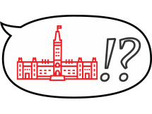

What happens when a Canadian MP uses language deemed unfit by the Speaker of the House of Commons? It gets "banned", added to the list of unparlimentary words. Every insult from this generator has been said by a Canadian MP at some point in the House of Commons, and subsequently added to the list.
From the extremely tame to the oddly personal, this is your chance to experience how it feels to be insulted just like a real Member of Parliament.
Put a name in below for your very own unparliamentary insult.